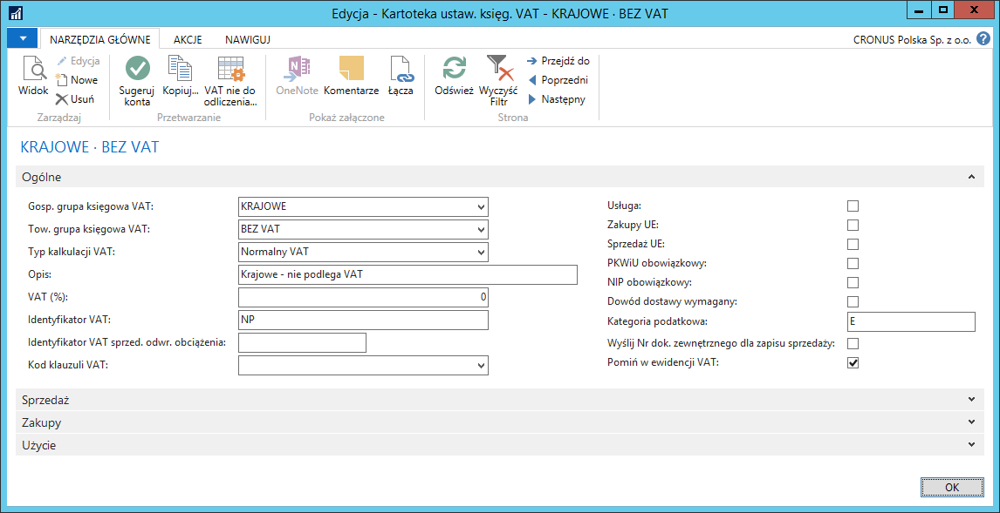
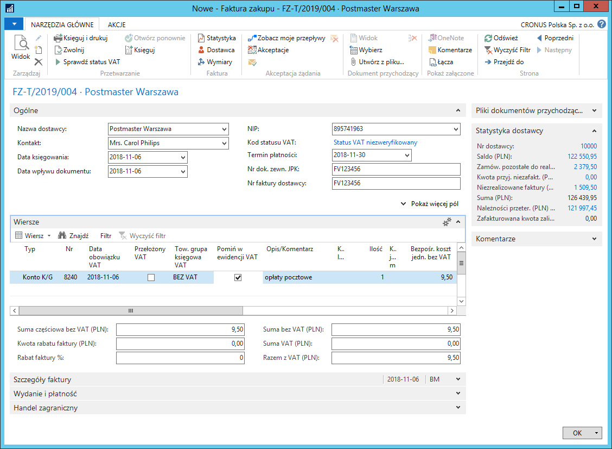
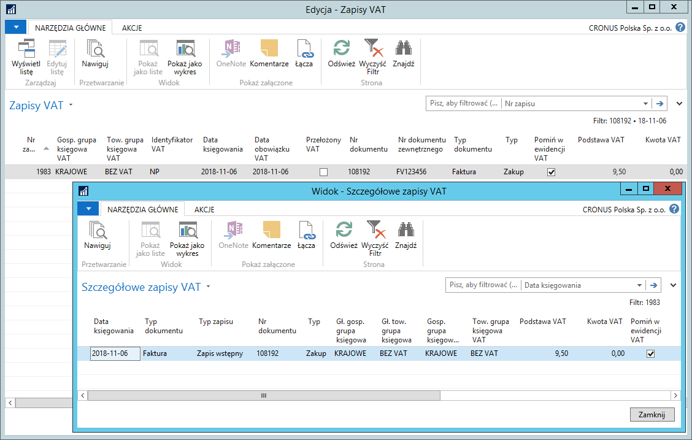

Pomijanie transakcji w ewidencji VAT
Informacje ogólne
Księgowanie dokumentów zakupu i dokumentów sprzedaży w Microsoft Dynamics 365 Business Central on‑premises skutkuje powstaniem zapisów VAT, które są bazą do rozliczenia VAT za dany okres. Jednak są takie transakcje, które nie podlegają opodatkowaniu VAT, dlatego w ramach Polskiej Lokalizacji zostało dodane narzędzie, które umożliwia wykluczanie wybranych zapisów VAT z rozliczenia VAT.
Ustawienia
W przypadku, gdy transakcje z wybraną kombinacją grup księgowych VAT nigdy nie podlegają opodatkowaniu VAT, możliwe jest ich domyślne oznaczenie jako pomijane w ewidencji VAT. W tym celu, należy postępować według następujących kroków:
Należy wybrać Działy > Zarządzanie Finansami > Administracja > Ustawienia księgowe VAT.
W oknie Ustawienia księgowe VAT, które się otworzy, należy ustawić kursor w wierszu z wybraną kombinacją grup księgowych VAT, a następnie wybrać Edycja.
W oknie Kartoteka ustaw. księg. VAT, które się otworzy, należy zaznaczyć pole Pomiń w ewidencji VAT.

Obsługa
Funkcjonalność Pomiń w ewidencji VAT opisana jest na przykładzie faktur zakupu, ale może być wykorzystana w wierszach następujących dokumentów: Zamówienie zakupu, Faktura zakupu, Zamówienie zwrotu zakupu, Faktura korygująca zakupu, Zamówienie sprzedaży, Faktura sprzedaży, Zamówienie zwrotu sprzedaży, Faktura korygująca sprzedaży. Pole Pomiń w ewidencji VAT można też edytować w wierszach dzienników głównych oraz w oknie VAT‑dodatkowe informacje. Po zaksięgowaniu transakcji z VAT, informacja o pominięciu w ewidencji VAT zapisywana jest w wierszach zaksięgowanych dokumentów: Zaksięgowana faktura zakupu, Zaksięgowana faktura korygująca zakupu, Zaksięgowana faktura sprzedaży, Zaksięgowana faktura korygująca sprzedaży. Pomiń w ewidencji VAT zapamiętane jest również w tabelach: Zapis VAT oraz Szczegółowy zapis VAT.
Uwaga
Zarządzanie pomijaniem i pokazywaniem poszczególnych zapisów VAT w ewidencji VAT po zaksięgowaniu dokumentów możliwe jest w oknie Arkusz rozliczania VAT. Więcej informacji na ten temat znajduje się w rozdziale Arkusz rozliczania VAT.
Aby zaksięgować fakturę zakupu z pominięciem w ewidencji VAT, należy postępować według następujących kroków:
Fakturę zakupu należy wprowadzić w standardowy sposób.
W wybranym wierszu faktury należy zaznaczyć pole Pomiń w ewidencji VAT.
Uwaga
W przypadku wprowadzenia wiersza dokumentu z kombinacją grup księgowych VAT, dla której w oknie Ustawienia księgowe VAT zaznaczone jest pole Pomiń w ewidencji VAT, spowoduje automatyczne zaznaczenie tego pola w wierszu dokumentu.

Po zaksięgowaniu dokumentu utworzone zostaną m.in. zapisy w tabelach Zapisy VAT i Szczegółowe zapisy VAT, w których pole Pomiń w ewidencji VAT będzie zaznaczone.
